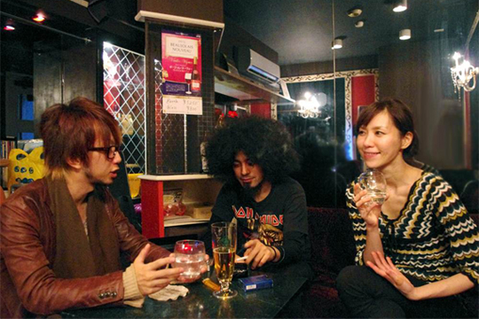

バックドロップシンデレラ（2/4） 
豊島渉： ウンザウンザってゆうのは、あの、ジャンルっていうよりは僕の好きなバンドに「unza unza time」という曲があるんです。 で、僕はその曲が凄い好きでその曲からヒントを得たこともありつつで、 曲作りの参考にもさせてもらいながらその言葉自体も凄く面白かったんで・・・「もう言っちゃえ」みたいな（笑）
――それは中国とか韓国ではなく？どのへんの国の話で？
豊島渉： アメリカでもUKでもなくボスニアの国のバンドで。旧ユーゴスラビアの。バルカン半島のバンドで。 そのバンドがやってるのを見てメチャクチャかっこいいな、日本人誰も知らんだろうから使ってしまおうかと（笑） まあ当の本人もジャンルとして使ってないんで、只の１曲のタイトルなんでいいかなと。
――響きが面白いですよね。
アサヒキャナコ： そう、イメージが沸きやすい。
――確かに聞きなれない言葉だけにエスニックじゃないけど異文化なイメージは強いですもんね。
豊島渉： でもそれを狙って付けたわけじゃなくてですね、バックドロップシンデレラに「少年はウンザウンザを踊る」って曲があるんですけども それがその「unza unza time」って曲を聴いて「ちょっとこーゆーのやってみようぜ」って言ってセッションして作った曲なんですよ。 でもその曲にはタイトルが付いてなくて、歌詞まで書き終わったんですけどずーと新曲って呼ばれていて。 ある日どっかのライブハウスで「やろう」ってなったときにライブハウスのセットリストに曲名を書かなきゃいけないじゃないですか？ そんときにタイトルがないなーって思っていたら「少年はウンザウンザを踊るでいいんじゃねーか？」つってペペペっと仮題みたいな感じで付けたら ウチのドラムがそれを見て爆笑してイイネ！みたいになって「じゃあいいじゃん」となったんですよ（笑）
―― 一徳ジャッジがあったと（笑）
豊島渉： 一徳ジャッジがあったんですよｗ チラっと見て「なにこれあの曲（のタイトル）？いいんじゃないの」つって。 そっから悪ノリが派生してって「池袋」ができたりとか「将軍」があって、悪ノリが悪ノリを生み続けてる感じなんですよね。
――そういう自分達なりの文脈があるってゆうのは凄く良いと思いますけどね。 ツアー中にも話しましたが筋肉少女帯とか「サンフランシスコ」って曲があった上で10年後に「サンフランシスコ10イヤーズアフター」って曲を作っていたりとか 続作なりスピンオフなり自分達なりのドラマを作れてる流れが「少年」「池袋」「将軍」ってあって 「次は何がウンザウンザを踊るんだ？」って期待を膨らまされる感じがファンからすると面白いですよね。
豊島渉： 多少プレッシャーに感じるんですけど（笑）
――次にどんな曲が出てくるんだって思うし、そのキーワードを掴んだのは凄いなって。
豊島渉： でもなんか将軍を名づけたときには、その作ってたー…
アサヒキャナコ： 作ってた？
豊島渉： そのとき作ってた楽曲の中で「この曲が一番ウンザウンザにふさわしいからこれにしよう」みたいな。 ウンザウンザの称号を与えて然るべき楽曲であろうみたいな感じで。 まぁPVは「歌わなきゃジャクソン」で撮ったんですけど一番パンチがあってキレがあって踊れるのは「将軍」かなと。